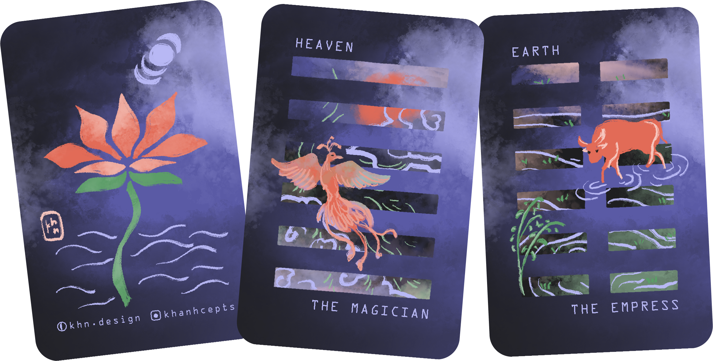
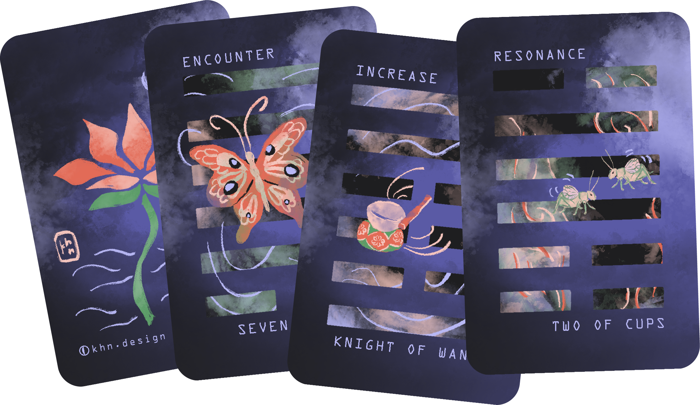
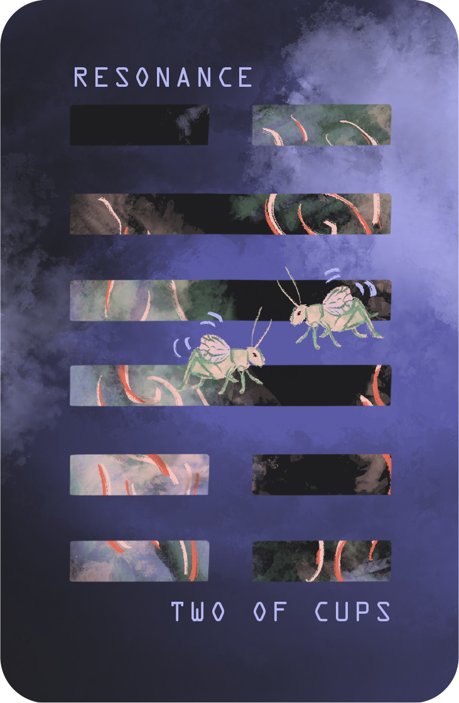
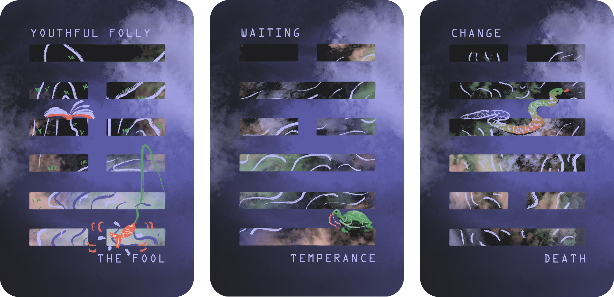
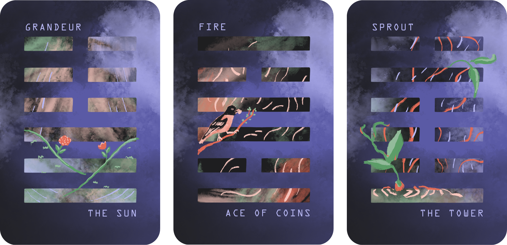
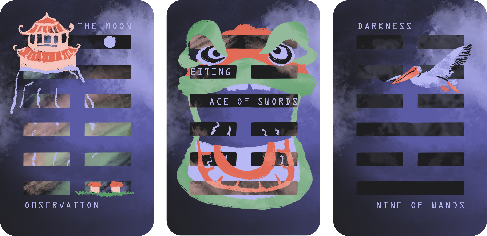
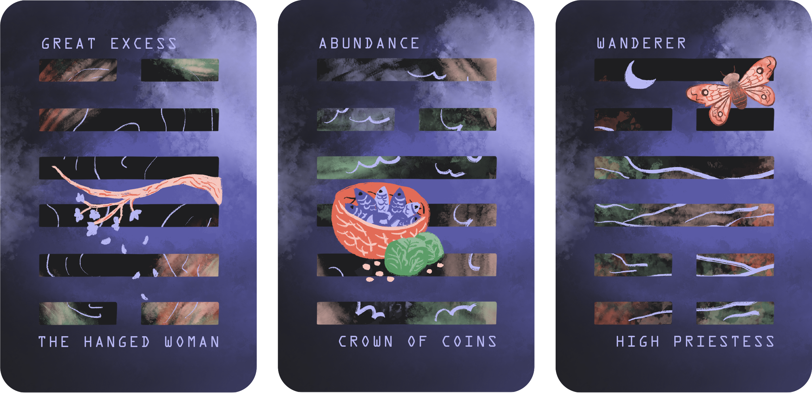
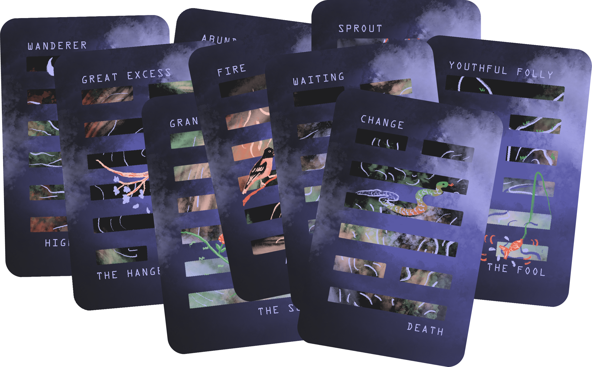

an oracle deck visualizing the 64 I Ching hexagrams and their tarot correspondence
tags: i ching, divination, tarot, card deck, art research, trans and nonbinary art, womxn empowerment



Divination tunes into inner intuition and the outer world, a beautiful representation of the interconnection of all beings in the universe and all events of fate. I use divination as a medium to understand myself, build relationships with others, and make creative, inspired decisions. As a long-time practitioner of tarot, I wanted to explore other forms, especially east and southeast Asian forms rooted in my heritage. In this project, I studied the I Ching, an ancient Chinese oracle, and I created an oracle deck that visualized the I Ching hexagrams. The deck draws on symbols from nature and culture to represent the meaning of the hexagrams. This was an art research project with deep roots.
When I studied the hexagram meanings, I mapped how they could correspond to tarot cards. While it was not always a 1:1 correspondence, especially as there are 78 tarot cards and 64 hexagrams, I treated it as a puzzle to better understand and interpret the I Ching. Some practitioners of either or both may disagree wih the assignments on the cards. I am at peace with that. There are many ways to make an interpretation, and meaning depends on context. I am not trying to create a definitive correspondence. Instead, I am making a comparison that would act as metaphor, translation, and rhyme between two different languages and mediums.

The act of translation is never perfect. By creating this deck, there is something to be lost in the purity of both divination methods. The I Ching method crafts hexagrams slowly, line by line, either by a coin toss method or a yarrow stick method. The six lines that compose a hexagram can be yin or yang, changing or unchanging, which could result in two different hexagrams for a reading, the original and one with the lines changed. In reading a judgement, there is a separate meaning for each line, with emphasis on the lines that are changing. I want to acknowledge this unique system is lost by simplifying the creative process of generating a hexagram to the extractive process of drawing a card. However, there are merits to creating a deck that would allow for a quicker pull, where the reader can still have time to engage with the I Ching in a style that is more familiar and accessible. Knowledge is built over time, and this changing process can still be retained by drawing with intention and intuition, and creating a cumulative experience.


Similarly, tarot decks have different interpretations based on the upright or reversed draw of a card that gets simplified in the translation. As the I Ching represents an ever-changing state from yin to yang, yang to yin, a Schrodinger's reading with both an upright and reversed interpretation could be fitting.
Finally, both systems are built on their own stories and narratives. The tarot's progression is a fool's journey towards gaining worldly experience and knowledge. The I Ching represents cycles of completion and incompletion, a quest for inner truth that may never cross the shore. As I learned more intimately about the I Ching, I recognized the patterns in the ordering of the hexagrams, which are comparable but not exact for the ordering of the tarot cards. For this reason, I focused more on how hexagrams individually related to tarot cards, knowing that the progression order may be scattered, as it would not be a perfect correspondence.


There is much to learn from the I Ching, but as with tarot, it was a system devised in a culture of patriarchy and gender-binaries. At the same time, the system of the I Ching, with a 'feminine' yin and 'masculine' yang, still shows a constant state of change between these two binaries that I choose to interpret as trans and nonbinary. I see this as a way of honoring the cultural lineage while updating it with values that are more aligned with my own.
For this reason, I chose to design a mainly gender-neutral deck and liberally interpret meanings in both gender-neutral and womxn-empowering ways. For example, many of the hexagrams warn against two women dwelling together in that it is inauspicious, or against a maiden taking her own initiative to marry. I would either keep the warning in the interpretation and remove gender from the equation, or celebrate the initiative and choose an alternate interpretation. I made other design choices that would maintain the gender-neutrality of the deck, which will be explained in the Changes: Gender section.
In the Daoist and Buddhist spirit of the I Ching, this is a work in progress and is complete at the same time. While I've finished all 64 hexagrams, as with the I Ching, things are ever-changing. I am always both growing and settling as well. It could be possible that I will revisit these correspondences and imagery and shift things over time.


In the I Ching, there are eight trigrams: earth, mountain, water, wind, thunder, fire, lake, heaven. These stack to create the 64 hexagrams. (To learn more about how the I Ching works, refer to the zine I made for reading the I Ching here.) I started by illustrating the 8 trigrams to get a better understanding of the individual elements. These trigrams have been shown throughout this page so far. Then I created a template and structure for building up the hexagrams. I would go one by one, reading the entire judgement of the hexagram, ruminating on it, and then imagining what I would draw to visualize it.
The design language for this project began to emerge as I drew. For the color scheme, I used the pinks, blues, and greens that I had used to create my first tarot deck, back in 2020. (This project is one I hope to revisit.) The trigrams started with midnight black building blocks, with only a blush-dawn pink and twilight blue as the background and light cloud blue illustrative elements. The hexagrams added in spring and jade greens and deeper hues of rust-earth red. I used brushes that evoked a wispy, hazy, almost hasty effect, as if they were ink paintings freshly drying. I deliberately selected imagery that evoked nature or my Chinese and Vietnamese heritage, suitable for the Book of Changes.


I mapped the correspondence to the tarot based on my understanding of the hexagram's meaning, knowing that it would not be perfect. The imperfection and process were part of the learning. I made several lists: a list of all the hexagrams and their meanings, a list of all the tarot cards and their meanings, and then a list starting to correspond the two. These lists were reworked over time as I started to more deeply understand both. There are two levels of meaning and translation. One is hexagram <> illustration, visualizing the meaning of the hexagram in the illustration. The other is hexagram <> tarot, the inclusion of the hexagram name and its correspondence to a tarot card. While some meanings might be clear when first seeing the card, and some might take a while to ruminate, none were arbitrary. All were chosen with intention.
I began writing out my explanations. These had four parts: the hexagram meaning, a key quote from the reading, the image description, and the tarot respondence.
For example, here is my explanation for Hexagram 31, Resonance.
hexagram meaning: resonance (xian). lake above mountain. influence and attraction is echoing in a relationship
quote: “two energies resonate. they connect. the mountain calms the joy of lake.”
image description: mating crickets create resonance in a summer sky
tarot correspondence: like the two of cups, there is attraction, connection, and equality of partnership


Some correspondences were easy in that I had a clear image of either what two elements I wanted to relate, what imagery I wanted to create, or both. I immediately knew that Hexagram 4, Youthful Folly, would correspond to the Fool. Similarly, Hexagram 5, Waiting, made a lot of sense for Temperance. For Hexagram 49, Change, I could map that to Death, and used a snake to represent the shedding of skin, the loss of one thing with the opportunity for renewal and new growth.

Some were not as straightforward. I went back and forth on whether it should be Hexagram 11, Grandeur, or Hexagram 30, Fire, that should be matched with the Sun. Hexagram 3, Sprout, or Difficult Birth, also gave me a lot of trouble. I considered many of the Ace cards as its correspondences, marking some kind of beginning, before settling on the Tower, because I wanted to speak to the major upheaval and shifts that were indicated by the hexagram.
Overall, I am pretty happy with the results. They met my goal of providing an intimate and accessible interpretation of the I Ching in vivid, visual cards that I am eager to share with others. I also expect that different versions will be updated to better reflect evolving experience. 73 cards were matched to 64 hexagrams, which left out 9. I considered doubling up on these 9, but eventually decided not to for now, so I would like to revisit where they could slot in. Notably, I referred to 78 total tarot cards earlier but mentioned 73 as my total now; five cards were combined, which will be discussed in the Changes: Gender section.

I developed a clear design language through the course of illustrating the cards: color palette, lines and brush sizes, expectations for placement and composition. There were variations on the theme, but they mostly stuck to this visual language. However, there were a few exceptions to these rules. Hexagram 20, Observation, or the Moon, happened to have a composition that required the text to be inverted, so that the hexagram name was on the bottom and the tarot correspondence was on the top. I still kept the left and right justifications to showcase that they are the same elements, and this reflective design fits with the nature of the card. In a similar way, Hexagram 21, Biting, had a lion dance head that exceeds the usual confines of the hexagram shape, but showcases the deliberate and bold nature of the card. Another example, Hexagram 36, Darkness, has a very minimalist approach to the shading to illustrate the more elusive and darker haze of the card.

I made a few intentional choices about gender with this deck. First, I combined the 'king' and 'queen' cards of a suit into one gender-neutral card, the 'crown' of a suit. Other terms I considered using were 'emprex' or 'ruler.' An example can be shown above, in Hexagram 14, Abundance, where the 'crown of coins' card replaces the king and queen of coins cards. I made this choice because in my interpretation of tarot, the king and queen cards are two parts of a very binary dichotomy, where they are ruling the suit but in either a more analytical and intellectual show of strength or an emotional and nurturing soft power. I believe there are femme and masc elements that we can learn from both and that they ought to be combined into one card that flexes this spectrum. This also conveniently reduces the 78 cards into 74 cards, which is slightly fewer I would have to correspond to the 64 hexagrams.
Further reducing this to 73 cards, I removed the Emperor as a card option. For a similar reason, as the card could be combined with 'the Empress.' However, I kept the name the Empress to represent them both, instead of changing it to a more gender-neutral Emprex as I considered, for a number of reasons. One, it aesthetically looked better as text on the card (empress aligned perfectly with the yin in Hexagram 2, Earth). Two, the nurturing side of the ruler was a bit more aligned to the hexagram, even if all aspects were important. Three, I believe that women do not get enough credit and I wanted to keep this very feminine card even while driving towards a set that challenges gender roles and expectations.
The last intentional choices about gender were changing 'the Hanged Man' to 'the Hanged Woman' for Hexagram 28, Great Excess, and keeping 'the High Priestess' as is for Hexagram 56, Wanderer. I liked the idea that a gender-neutral default could be a term that is typically seen as more traditionally feminine, in a world where a gender-neutral default usually falls back to a more traditionally masculine term. While this is a mainly gender-neutral deck, in the places where gender is called out, I wanted it to be explicitly the gender of a woman.



The deck has been ordered in print, and I am looking forward to using it for readings. I will also be selling individual cards at art vendor fairs in addition to providing reading services. I am looking into a pre-order option to make the deck purchasable as well.